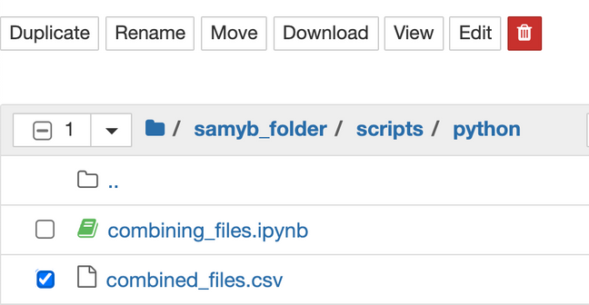
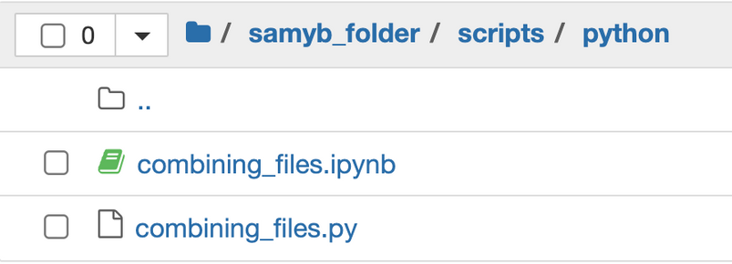
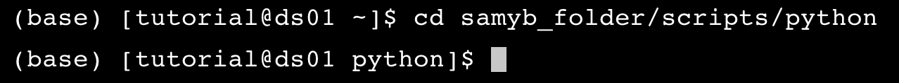
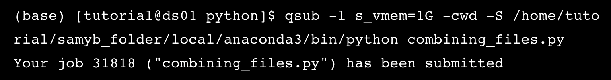

Job submission#
Most of the commands that we use to submit, alter, and delete jobs in the queue start with the letter q. Let’s try to perform some basic tasks related to job submission.
Practice 9#
Check the available cluster nodes and who is currently using them.
Checking status
qstat -u "*": request the status of the jobs currently running.
Expected output
Practice 10#
Delete the combined_files.csv from your folder. Then, download the Jupyter Notebook in Practice 7 as combining_files.py and put it in your script folder. Submit this file to the cluster machine and execute it using the Python installed in your virtual environment.
Submitting job
qsub |
-l s_vmem=1G |
-cwd |
-S pythonpath |
filename |
|---|---|---|---|---|
Submit job |
Reserve memory slot |
Send output to current directory |
Declare which python to use |
Declare which file to submit |
Steps
Delete the
combined_files.csv.Download
combining_files.ipynbas.pythen put it in the same folder.Get inside your folder in terminal using
cd.Write down the job submission command. Reserve 2 GB memory then use the python in your virtual environment. The path should be like
/home/*yourgroupfolder*/*yourfolder*/local/anaconda3/envs/*yourenvname*/bin/python
Practice 11#
Show the output files and error files.
Check job status
qstat: check your own submission status. If `qstat gives no output, that means everything runs well.
If qstat gives output like this, that means it is still waiting. Wait for few seconds and run qstat again.
Go back to Jupyter Notebook and if you do everything correctly, you will see the error file (.e####) and the output file (.o####).
Since we don’t have any errors and haven’t printed any output (only writing combined_files.csv), both files are empty. If the job fails, you can always delete it and you will get a new one.
Expected output
Practice 12#
Try to put in the wrong path for your virtual environment. Submit the combining_files.py again, check its status, then delete the job.
delete job
qdel *jobnumber*: Delete the job from the queue.
Expected output